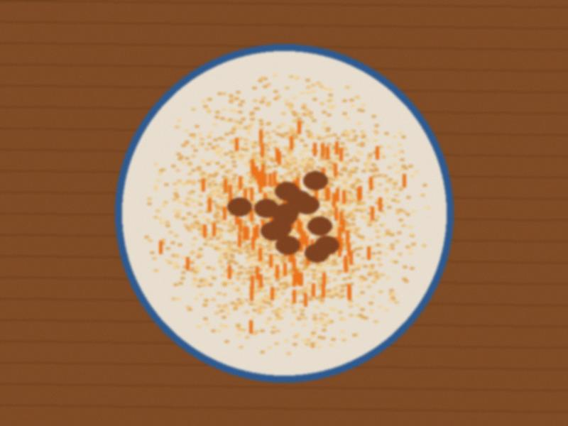

Easter, the quiet one
Easter again, and the first time we did not take the children to the midnight liturgy. The little one has a cough.…
♥ 48 · 0 comments
Eldiyar's first teacher
We went to meet the school. Not the first of September yet, just a meeting for the parents, in the school hall, with…
♥ 91 · 0 comments

Pumpkin manty
Pumpkin manty on the big tray, ready for the steamer. For the fast days, and for the days when there is no meat in the…
♥ 13 · 0 comments
School shoes
Eldiyar goes to school next year, but already today I stood in the bazaar and compared prices of school shoes, because…
♥ 117 · 0 comments
Dastan's schedule
For people who ask what "shifts" means: it means that for two weeks I see my husband at breakfast, for two weeks at…
♥ 113 · 0 comments

Easter
The north door of the cathedral at midnight, candles in every hand. Christ is risen! The service began at midnight. In…
♥ 120 · 0 comments

Aruuke gets in
Aruuke at the kindergarten gate with the rabbit bag, first morning. She is in! Number 214 became number 31 because (I…
♥ 148 · 1 comments
Old New Year
The Old New Year, 13 January, the one nobody can explain. In the village they still celebrate it, with a table and a…
♥ 23 · 0 comments

Winter list
The winter list on the fridge door, in my handwriting. Every November I write a list on a piece of paper and hang it…
♥ 99 · 1 comments
After the Cross
The Cross is today, and after it the pilgrims go home and the town sleeps. I always feel a bit empty. Bread is back to…
♥ 67 · 0 comments
The Feast, from the window
Feast of St. Janyl. Every year I say: this year I will go up in the morning and stand properly. And every year the…
♥ 123 · 0 comments
The queue
We put Aruuke on the list for the kindergarten No. 4, the one near the bazaar. Today the lady at the office looked at…
♥ 59 · 0 comments